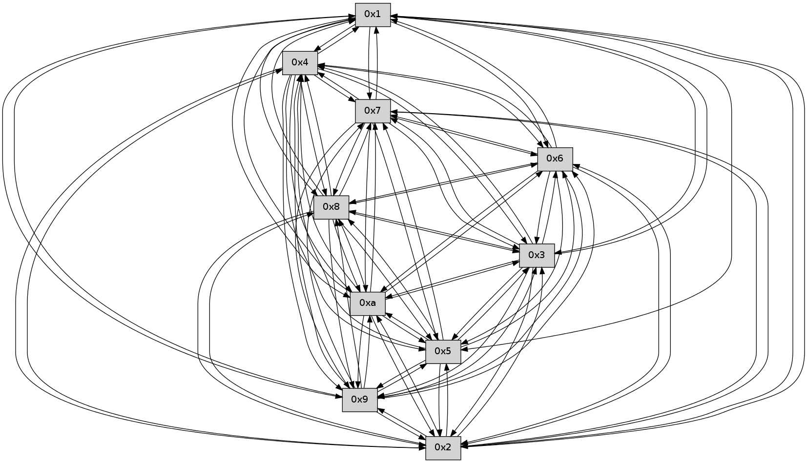

>> << IDX [start] -100 -25 -5 +0 +5 +25 +100 [240.020113945]
 Previous packets
----------------------------------------------------------------------
235.291323 beacon01(faad) #0 coord=01,02,03,04,05,06,07,0a,09,08 cycle=688.0ms assoc
-- color-indic=0 64 ad 3c
235.301304 beacon02(faad) #0 coord=01,02,03,04,05,06,07,0a,09,08 cycle=688.0ms assoc 64 3e 0d
235.311305 beacon03(faad) #0 coord=01,02,03,04,05,06,07,0a,09,08 cycle=688.0ms assoc 64 44 40
235.321306 beacon04(faad) #0 coord=01,02,03,04,05,06,07,0a,09,08 cycle=688.0ms assoc 64 33 aa
235.331306 beacon05(faad) #0 coord=01,02,03,04,05,06,07,0a,09,08 cycle=688.0ms assoc 64 49 e7
235.341306 beacon06(faad) #0 coord=01,02,03,04,05,06,07,0a,09,08 cycle=688.0ms assoc 64 c7 30
235.351307 beacon07(faad) #0 coord=01,02,03,04,05,06,07,0a,09,08 cycle=688.0ms assoc 64 bd 7d
235.361310 beacon0a(faad) #0 coord=01,02,03,04,05,06,07,0a,09,08 cycle=688.0ms assoc 64 cc 76
235.371312 beacon09(faad) #0 coord=01,02,03,04,05,06,07,0a,09,08 cycle=688.0ms assoc 64 42 a1
235.381311 beacon08(faad) #0 coord=01,02,03,04,05,06,07,0a,09,08 cycle=688.0ms assoc 64 38 ec
235.392476 [Hello(3): seq=155 sym=5,7,6,4,2,8,9,10,1 sysInfo= stat=5:7,0,0,0/7:8,0,0,0/6:4,0,0,0/4:2,0,0,0/2:5,0,0,0/8:11,0,0,0/9:4,0,0,0/10:9,0,0,0/1:10,0,0,0]
235.395332 [Hello(1): seq=63 sym=4,2,9,5,10,3,8,6,7 sysInfo= stat=4:15,0,0,0/2:4,0,0,0/9:2,0,0,0/5:6,0,0,0/10:14,0,0,0/3:1,0,0,0/8:15,0,0,0/6:7,0,0,0/7:7,0,0,0]
235.398042 [Hello(4): seq=155 sym=5,7,6,2,3,9,8,10,1 sysInfo= stat=5:2,0,0,0/7:0,0,0,0/6:3,0,0,0/2:5,0,0,0/3:0,0,0,0/9:4,0,0,0/8:6,0,0,0/10:6,0,0,0/1:1,0,0,0]
235.403631 [Hello(2): seq=152 sym=4,5,7,6,3,9,8,10,1 sysInfo= stat=4:15,0,0,0/5:3,0,0,0/7:0,0,0,0/6:5,0,0,0/3:15,0,0,0/9:6,0,0,0/8:5,0,0,0/10:0,0,0,0/1:0,0,0,0]
235.408662 [Hello(5): seq=155 sym=7,6,4,2,3,9,8,10 sysInfo= stat=7:10,0,0,0/6:9,0,0,0/4:15,0,0,0/2:11,0,0,0/3:5,0,0,0/9:3,0,0,0/8:13,0,0,0/10:4,0,0,0]
----------------------------------------------------------------------
236.079456 beacon01(faad) #0 coord=01,02,03,04,05,06,07,0a,09,08 cycle=688.0ms assoc
-- color-indic=0 64 11 39
236.089437 beacon02(faad) #0 coord=01,02,03,04,05,06,07,0a,09,08 cycle=688.0ms assoc 64 82 08
236.099438 beacon03(faad) #0 coord=01,02,03,04,05,06,07,0a,09,08 cycle=688.0ms assoc 64 f8 45
236.109439 beacon04(faad) #0 coord=01,02,03,04,05,06,07,0a,09,08 cycle=688.0ms assoc 64 8f af
236.119439 beacon05(faad) #0 coord=01,02,03,04,05,06,07,0a,09,08 cycle=688.0ms assoc 64 f5 e2
236.129438 beacon06(faad) #0 coord=01,02,03,04,05,06,07,0a,09,08 cycle=688.0ms assoc 64 7b 35
236.139440 beacon07(faad) #0 coord=01,02,03,04,05,06,07,0a,09,08 cycle=688.0ms assoc 64 01 78
236.149445 beacon0a(faad) #0 coord=01,02,03,04,05,06,07,0a,09,08 cycle=688.0ms assoc 64 70 73
236.159445 beacon09(faad) #0 coord=01,02,03,04,05,06,07,0a,09,08 cycle=688.0ms assoc 64 fe a4
236.169447 beacon08(faad) #0 coord=01,02,03,04,05,06,07,0a,09,08 cycle=688.0ms assoc 64 84 e9
236.180905 [Hello(6): seq=155 sym=2,3,5,4,7,9,8,10,1 sysInfo= stat=2:1,0,0,0/3:13,0,0,0/5:7,0,0,0/4:4,0,0,0/7:14,0,0,0/9:2,0,0,0/8:3,0,0,0/10:1,0,0,0/1:1,0,0,0]
236.183745 [Hello(9): seq=98 sym=5,2,3,4,7,6,8,10,1 sysInfo= stat=5:4,0,0,0/2:4,0,0,0/3:9,0,0,0/4:15,0,0,0/7:4,0,0,0/6:14,0,0,0/8:12,0,0,0/10:10,0,0,0/1:1,0,0,0]
236.186191 [Hello(10): seq=87 sym=6,3,2,5,9,7,4,1 sysInfo= stat=6:0,0,0,0/3:13,0,0,0/2:14,0,0,0/5:1,0,0,0/9:15,0,0,0/7:15,0,0,0/4:11,0,0,0/1:8,0,0,0]
236.188839 [Hello(7): seq=155 sym=2,3,5,6,4,8,9,10,1 sysInfo= stat=2:12,0,0,0/3:13,0,0,0/5:10,0,0,0/6:9,0,0,0/4:15,0,0,0/8:15,0,0,0/9:0,0,0,0/10:11,0,0,0/1:4,0,0,0]
236.195278 [Hello(8): seq=98 sym=5,2,3,4,7,6,9,10,1 sysInfo= stat=5:14,0,0,0/2:12,0,0,0/3:1,0,0,0/4:3,0,0,0/7:5,0,0,0/6:9,0,0,0/9:12,0,0,0/10:8,0,0,0/1:5,0,0,0]
----------------------------------------------------------------------
236.867590 beacon01(faad) #0 coord=01,02,03,04,05,06,07,0a,09,08 cycle=688.0ms assoc
-- color-indic=0 64 d5 37
236.877572 beacon02(faad) #0 coord=01,02,03,04,05,06,07,0a,09,08 cycle=688.0ms assoc 64 46 06
236.887572 beacon03(faad) #0 coord=01,02,03,04,05,06,07,0a,09,08 cycle=688.0ms assoc 64 3c 4b
236.897574 beacon04(faad) #0 coord=01,02,03,04,05,06,07,0a,09,08 cycle=688.0ms assoc 64 4b a1
236.907571 beacon05(faad) #0 coord=01,02,03,04,05,06,07,0a,09,08 cycle=688.0ms assoc 64 31 ec
236.917572 beacon06(faad) #0 coord=01,02,03,04,05,06,07,0a,09,08 cycle=688.0ms assoc 64 bf 3b
236.927572 beacon07(faad) #0 coord=01,02,03,04,05,06,07,0a,09,08 cycle=688.0ms assoc 64 c5 76
236.937578 beacon0a(faad) #0 coord=01,02,03,04,05,06,07,0a,09,08 cycle=688.0ms assoc 64 b4 7d
236.947577 beacon09(faad) #0 coord=01,02,03,04,05,06,07,0a,09,08 cycle=688.0ms assoc 64 3a aa
236.957579 beacon08(faad) #0 coord=01,02,03,04,05,06,07,0a,09,08 cycle=688.0ms assoc 64 40 e7
----------------------------------------------------------------------
237.655723 beacon01(faad) #0 coord=01,02,03,04,05,06,07,0a,09,08 cycle=688.0ms assoc
-- color-indic=0 64 69 32
237.665705 beacon02(faad) #0 coord=01,02,03,04,05,06,07,0a,09,08 cycle=688.0ms assoc 64 fa 03
237.675706 beacon03(faad) #0 coord=01,02,03,04,05,06,07,0a,09,08 cycle=688.0ms assoc 64 80 4e
237.685706 beacon04(faad) #0 coord=01,02,03,04,05,06,07,0a,09,08 cycle=688.0ms assoc 64 f7 a4
237.695708 beacon05(faad) #0 coord=01,02,03,04,05,06,07,0a,09,08 cycle=688.0ms assoc 64 8d e9
237.705707 beacon06(faad) #0 coord=01,02,03,04,05,06,07,0a,09,08 cycle=688.0ms assoc 64 03 3e
237.715707 beacon07(faad) #0 coord=01,02,03,04,05,06,07,0a,09,08 cycle=688.0ms assoc 64 79 73
237.725712 beacon0a(faad) #0 coord=01,02,03,04,05,06,07,0a,09,08 cycle=688.0ms assoc 64 08 78
237.735711 beacon09(faad) #0 coord=01,02,03,04,05,06,07,0a,09,08 cycle=688.0ms assoc 64 86 af
237.745711 beacon08(faad) #0 coord=01,02,03,04,05,06,07,0a,09,08 cycle=688.0ms assoc 64 fc e2
237.762435 [Hello(6): seq=156 sym=2,3,5,4,7,9,8,10,1 sysInfo= stat=2:2,0,0,0/3:14,0,0,0/5:7,0,0,0/4:4,0,0,0/7:15,0,0,0/9:3,0,0,0/8:4,0,0,0/10:1,0,0,0/1:1,0,0,0]
237.768020 [Hello(9): seq=99 sym=5,2,3,4,7,6,8,10,1 sysInfo= stat=5:4,0,0,0/2:4,0,0,0/3:9,0,0,0/4:0,0,0,0/7:5,0,0,0/6:14,0,0,0/8:13,0,0,0/10:11,0,0,0/1:1,0,0,0]
237.771998 [Hello(10): seq=88 sym=6,3,2,5,9,8,7,4,1 sysInfo= stat=6:0,0,0,0/3:14,0,0,0/2:15,0,0,0/5:1,0,0,0/9:15,0,0,0/8:0,0,0,0/7:0,0,0,0/4:11,0,0,0/1:8,0,0,0]
----------------------------------------------------------------------
238.443852 beacon01(faad) #0 coord=01,02,03,04,05,06,07,0a,09,08 cycle=688.0ms assoc
-- color-indic=0 64 fd eb
238.453835 beacon02(faad) #0 coord=01,02,03,04,05,06,07,0a,09,08 cycle=688.0ms assoc 64 6e da
238.463835 beacon03(faad) #0 coord=01,02,03,04,05,06,07,0a,09,08 cycle=688.0ms assoc 64 14 97
238.473836 beacon04(faad) #0 coord=01,02,03,04,05,06,07,0a,09,08 cycle=688.0ms assoc 64 63 7d
238.483836 beacon05(faad) #0 coord=01,02,03,04,05,06,07,0a,09,08 cycle=688.0ms assoc 64 19 30
238.493834 beacon06(faad) #0 coord=01,02,03,04,05,06,07,0a,09,08 cycle=688.0ms assoc 64 97 e7
238.503836 beacon07(faad) #0 coord=01,02,03,04,05,06,07,0a,09,08 cycle=688.0ms assoc 64 ed aa
238.513840 beacon0a(faad) #0 coord=01,02,03,04,05,06,07,0a,09,08 cycle=688.0ms assoc 64 9c a1
238.523841 beacon09(faad) #0 coord=01,02,03,04,05,06,07,0a,09,08 cycle=688.0ms assoc 64 12 76
238.533841 beacon08(faad) #0 coord=01,02,03,04,05,06,07,0a,09,08 cycle=688.0ms assoc 64 68 3b
238.545013 [Hello(3): seq=157 sym=5,7,6,4,2,8,9,10,1 sysInfo= stat=5:8,0,0,0/7:10,0,0,0/6:6,0,0,0/4:3,0,0,0/2:6,0,0,0/8:12,0,0,0/9:6,0,0,0/10:10,0,0,0/1:11,0,0,0]
238.547692 [Hello(2): seq=154 sym=4,5,7,6,3,9,8,10,1 sysInfo= stat=4:0,0,0,0/5:4,0,0,0/7:2,0,0,0/6:7,0,0,0/3:15,0,0,0/9:8,0,0,0/8:6,0,0,0/10:1,0,0,0/1:0,0,0,0]
238.550575 [Hello(4): seq=157 sym=5,7,6,2,3,9,8,10,1 sysInfo= stat=5:3,0,0,0/7:1,0,0,0/6:5,0,0,0/2:6,0,0,0/3:0,0,0,0/9:6,0,0,0/8:7,0,0,0/10:7,0,0,0/1:1,0,0,0]
238.556429 [Hello(5): seq=157 sym=7,6,4,2,3,9,8,10 sysInfo= stat=7:12,0,0,0/6:11,0,0,0/4:0,0,0,0/2:11,0,0,0/3:5,0,0,0/9:5,0,0,0/8:14,0,0,0/10:5,0,0,0]
----------------------------------------------------------------------
239.231984 beacon01(faad) #0 coord=01,02,03,04,05,06,07,0a,09,08 cycle=688.0ms assoc
-- color-indic=0 64 41 ee
239.241966 beacon02(faad) #0 coord=01,02,03,04,05,06,07,0a,09,08 cycle=688.0ms assoc 64 d2 df
239.251967 beacon03(faad) #0 coord=01,02,03,04,05,06,07,0a,09,08 cycle=688.0ms assoc 64 a8 92
239.261966 beacon04(faad) #0 coord=01,02,03,04,05,06,07,0a,09,08 cycle=688.0ms assoc 64 df 78
239.271967 beacon05(faad) #0 coord=01,02,03,04,05,06,07,0a,09,08 cycle=688.0ms assoc 64 a5 35
239.281967 beacon06(faad) #0 coord=01,02,03,04,05,06,07,0a,09,08 cycle=688.0ms assoc 64 2b e2
239.291969 beacon07(faad) #0 coord=01,02,03,04,05,06,07,0a,09,08 cycle=688.0ms assoc 64 51 af
239.301972 beacon0a(faad) #0 coord=01,02,03,04,05,06,07,0a,09,08 cycle=688.0ms assoc 64 20 a4
239.311971 beacon09(faad) #0 coord=01,02,03,04,05,06,07,0a,09,08 cycle=688.0ms assoc 64 ae 73
239.321974 beacon08(faad) #0 coord=01,02,03,04,05,06,07,0a,09,08 cycle=688.0ms assoc 64 d4 3e
239.333742 [Hello(10): seq=89 sym=6,3,2,5,9,8,7,4,1 asym= sysInfo= stat=6:0,0,0,0/3:15,0,0,0/2:0,0,0,0/5:2,0,0,0/9:15,0,0,0/8:0,0,0,0/7:0,0,0,0/4:12,0,0,0/1:8,0,0,0]
239.343948 [Hello(9): seq=100 sym=5,2,3,4,7,6,8,10,1 sysInfo= stat=5:5,0,0,0/2:5,0,0,0/3:10,0,0,0/4:1,0,0,0/7:5,0,0,0/6:14,0,0,0/8:13,0,0,0/10:12,0,0,0/1:1,0,0,0]
239.352554 [Hello(7): seq=157 sym=2,3,5,6,4,8,9,10,1 sysInfo= stat=2:14,0,0,0/3:15,0,0,0/5:11,0,0,0/6:10,0,0,0/4:0,0,0,0/8:0,0,0,0/9:1,0,0,0/10:12,0,0,0/1:4,0,0,0]